<!DOCTYPE html PUBLIC "-//W3C//DTD XHTML 1.0 Transitional//EN" "http://www.w3.org/TR/xhtml1/DTD/xhtml1-transitional.dtd">
<html xmlns="http://www.w3.org/1999/xhtml">
	<head>
		<meta http-equiv="Content-Type" content="text/html; charset=utf-8" /><title>
		</title>
		<style type="text/css">
			.cs95E872D0{text-align:left;text-indent:0pt;margin:0pt 0pt 0pt 0pt}
			.cs84FBA952{color:#000000;background-color:transparent;font-family:Calibri;font-size:17pt;font-weight:normal;font-style:normal;}
			.csB33285EC{color:#808080;background-color:transparent;font-family:Calibri;font-size:10pt;font-weight:normal;font-style:normal;}
			.cs14438CD8{text-align:left;text-indent:0pt;margin:0pt 0pt 0pt 0pt}
			.csA27DA275{color:#000000;background-color:transparent;font-family:Calibri;font-size:16pt;font-weight:bold;font-style:normal;}
			.cs1B16EEB5{color:#000000;background-color:transparent;font-family:Calibri;font-size:11pt;font-weight:normal;font-style:normal;}
			.cs5FC355D3{color:#666666;background-color:transparent;font-family:Tahoma;font-size:8pt;font-weight:normal;font-style:normal;}
			.csCF6BBF71{color:#000000;background-color:transparent;font-family:Times New Roman;font-size:12pt;font-weight:normal;font-style:normal;}
			.cs955DD547{color:#000000;background-color:transparent;font-family:Times New Roman;font-size:12pt;font-weight:normal;font-style:normal;text-decoration: none;}
			.cs9D381454{color:#666666;background-color:transparent;font-family:Tahoma;font-size:8pt;font-weight:normal;font-style:normal;text-decoration: underline;}
			.csB4F56505{color:#000000;background-color:transparent;font-family:Calibri;font-size:11pt;font-weight:normal;font-style:normal;text-decoration: none;}
			.cs777ED152{color:#0000FF;background-color:transparent;font-family:Calibri;font-size:11pt;font-weight:normal;font-style:normal;text-decoration: underline;}
			.cs7CE4C382{color:#20435C;background-color:transparent;font-family:Trebuchet MS;font-size:20pt;font-weight:normal;font-style:normal;}
			.cs1F22C4AD{color:#000000;background-color:transparent;font-family:Trebuchet MS;font-size:11pt;font-weight:normal;font-style:normal;}
			.csA0BF0605{color:#20435C;background-color:transparent;font-family:Trebuchet MS;font-size:16pt;font-weight:normal;font-style:normal;}
			.csC5F71395{color:#000000;background-color:transparent;font-family:Trebuchet MS;font-size:11pt;font-weight:bold;font-style:normal;}
			.cs1DA2E76{color:#000000;background-color:transparent;font-family:Times New Roman;font-size:11pt;font-weight:normal;font-style:normal;}
			.cs490F1DCA{color:#000000;background-color:transparent;font-family:Times New Roman;font-size:11pt;font-weight:normal;font-style:normal;text-decoration: none;}
			.csC6D0E219{color:#0000FF;background-color:transparent;font-family:Trebuchet MS;font-size:11pt;font-weight:normal;font-style:normal;text-decoration: underline;}
			.cs7FC7682D{color:#969696;background-color:transparent;font-family:Arial;font-size:9pt;font-weight:normal;font-style:normal;}
		</style>
	</head>
	<body>
		<p class="cs95E872D0"><span class="cs84FBA952">KlikAanKlikUit (fph)</span></p><p class="cs95E872D0"><span class="csB33285EC">1 August, 2018</span></p><p class="cs95E872D0"><span class="csB33285EC">15:40</span></p><p class="cs14438CD8"><span class="csA27DA275">Nieuw Protocol:</span></p><p class="cs14438CD8"><span class="cs1B16EEB5">code:</span></p><p class="cs14438CD8"><span class="cs1B16EEB5">&nbsp;&nbsp;&nbsp;&nbsp;&nbsp;&nbsp;&nbsp;&nbsp; _&nbsp;&nbsp; _<br/>&#39;0&#39;:&nbsp;&nbsp;&nbsp;&nbsp;&nbsp;&nbsp;&nbsp;&nbsp;| |_| |____&nbsp;&nbsp;&nbsp;&nbsp;&nbsp;&nbsp;&nbsp;&nbsp;(T,T,T,3T)<br/>&nbsp; &nbsp;&nbsp;&nbsp;&nbsp;&nbsp;&nbsp;&nbsp;&nbsp; _&nbsp;&nbsp;&nbsp;&nbsp;&nbsp; _<br/>&#39;1&#39;:&nbsp;&nbsp;&nbsp;&nbsp;&nbsp;&nbsp;&nbsp;&nbsp;| |____| |_&nbsp;&nbsp;&nbsp;&nbsp;&nbsp;&nbsp;&nbsp;&nbsp;(T,3T,T,T)<br/>&nbsp; &nbsp;&nbsp;&nbsp;&nbsp;&nbsp;&nbsp;&nbsp;&nbsp; _&nbsp;&nbsp; _<br/>dim:&nbsp;&nbsp;&nbsp;&nbsp;&nbsp;&nbsp;&nbsp;&nbsp;| |_| |_&nbsp;&nbsp;&nbsp;&nbsp;&nbsp;&nbsp;&nbsp;&nbsp;(T,T,T,T) <br/><br/>T = korte periode = 275 &micro;s (of 375, werkt ook)<br/>lange periode = 3,4 of 5*T (werkt ook allebei)<br/><br/>Het frame bestaat normaal uit 32 bits:<br/>startpuls (T hoog, 9*laag)<br/>26&nbsp;&nbsp;&nbsp;&nbsp;&nbsp;&nbsp;&nbsp;&nbsp;adres<br/>1&nbsp;&nbsp;&nbsp;&nbsp;&nbsp;&nbsp;&nbsp;&nbsp;groep-bit<br/>1&nbsp;&nbsp;&nbsp;&nbsp;&nbsp;&nbsp;&nbsp;&nbsp;on/off/[dim]<br/>4&nbsp;&nbsp;&nbsp;&nbsp;&nbsp;&nbsp;&nbsp;&nbsp;unit (indien meerdere kanalen op &eacute;&eacute;n zender)<br/>[4]&nbsp;&nbsp;&nbsp;&nbsp;&nbsp;&nbsp;&nbsp;&nbsp;[dimniveau]<br/>stoppuls (T hoog, 39 laag)<br/></span><span class="cs5FC355D3">Pasted from &lt;</span><span class="csCF6BBF71"><a class="cs955DD547" href="https://www.circuitsonline.net/forum/view/89220"><span class="cs9D381454">https://www.circuitsonline.net/forum/view/89220</span></a></span><span class="cs5FC355D3">&gt; </span></p><p class="cs14438CD8"><span class="cs1B16EEB5">&nbsp;</span></p><p class="cs14438CD8"><span class="cs1B16EEB5">&nbsp;</span></p><p class="cs14438CD8"><span class="cs1B16EEB5">&nbsp;</span></p><p class="cs14438CD8"><span class="csA27DA275">Oud Protocol</span></p><p class="cs14438CD8"><span class="cs1B16EEB5">&nbsp;</span></p><p class="cs14438CD8"><span>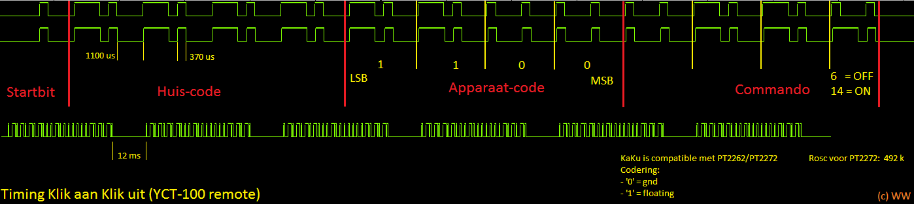</span></p><p class="cs14438CD8"><span class="cs1B16EEB5">Nog meer oud: <a class="csB4F56505" href="https://gathering.tweakers.net/forum/list_messages/1594647"><span class="cs777ED152">https://gathering.tweakers.net/forum/list_messages/1594647</span></a></span></p><p class="cs14438CD8"><span class="cs1B16EEB5">&nbsp;</span></p><p class="cs14438CD8"><span class="cs1B16EEB5">&nbsp;</span></p><p class="cs14438CD8"><span class="cs1B16EEB5">OOK, 3.85 kbs</span></p><p class="cs14438CD8"><span class="cs7CE4C382">&nbsp;</span></p><p class="cs14438CD8"><span class="cs1B16EEB5">&nbsp;</span></p><p class="cs14438CD8"><span class="cs7CE4C382">KlikAanKlikUit (KAKU, COCO)</span></p><p class="cs14438CD8"><span class="cs1F22C4AD">last updated: 20-12-2014, Stef Mientki</span></p><p class="cs14438CD8"><span class="csA0BF0605">Introduction</span></p><p class="cs14438CD8"><span class="cs1F22C4AD">This document describes some tests with the SI4432 tranceiver to transmit and receive + decode signals from the KlikAanKlikUit-system (KAKU, COCO).</span></p><p class="cs14438CD8"><span class="cs1F22C4AD">The KAKU system, is a system for wireless home automation. It has a large set of devices for a reasonable price. The range is quiet good, they claim 70 m in the free air and 30 m in house. For what I&#39;ve tested indeed 25..30 m in house is achievable.</span></p><p class="cs14438CD8"><span class="cs1F22C4AD">Most interesting is that the receivers are all self traning and each receiver can act on 6 different codes. If want to add a pic controller to your home automation system, &nbsp;you want to be able to control the receivers with a pic. And that&#39;s very easy: just generate a random 32 bit address and let the selected receiver train on that address. So in general there&#39;s no need for decoding the transmitted signal form switches.</span></p><p class="cs14438CD8"><span class="cs1F22C4AD">The&nbsp;</span><span class="csC5F71395">RF-part</span><span class="cs1F22C4AD">&nbsp;of the transmission is defined by:</span></p><p class="cs14438CD8"><span class="cs1F22C4AD">&nbsp; -- Modulation Type &nbsp; &nbsp; &nbsp;: OOK</span></p><p class="cs14438CD8"><span class="cs1F22C4AD">&nbsp; -- Manchester &nbsp; &nbsp; &nbsp; &nbsp; &nbsp; &nbsp; &nbsp;: OFF</span></p><p class="cs14438CD8"><span class="cs1F22C4AD">&nbsp; -- Carrier Frequency &nbsp; &nbsp;: 433.92 [MHz]</span></p><p class="cs14438CD8"><span class="cs1F22C4AD">&nbsp; -- Data Rate &nbsp; &nbsp; &nbsp; &nbsp; &nbsp; &nbsp; &nbsp; &nbsp;: 3.85 [kb/s]</span></p><p class="cs14438CD8"><span class="cs1F22C4AD">Each</span><span class="csC5F71395">&nbsp;control word</span><span class="cs1F22C4AD">&nbsp;consists of the following:</span></p><p class="cs14438CD8"><span class="cs1F22C4AD">&nbsp; &nbsp; Start Bit</span></p><p class="cs14438CD8"><span class="cs1F22C4AD">&nbsp; &nbsp;&nbsp;Bits 1..26 are assumed to form the (unique) address.</span></p><p class="cs14438CD8"><span class="cs1F22C4AD">&nbsp; &nbsp;&nbsp;Bit 27 = Group (no yet tested)</span></p><p class="cs14438CD8"><span class="cs1F22C4AD">&nbsp; &nbsp;&nbsp;Bit 28 = On/ Off / Dim (Dim is not tested)</span></p><p class="cs14438CD8"><span class="cs1F22C4AD">&nbsp; &nbsp;&nbsp;Bit 29..32 = Unit</span></p><p class="cs14438CD8"><span class="cs1F22C4AD">&nbsp; &nbsp;&nbsp;Stop-Bit</span></p><p class="cs14438CD8"><span class="cs1F22C4AD">Pressing a switch will send 10 to 20 times the control word.</span></p><p class="cs14438CD8"><span class="cs1F22C4AD">The individual bits are defined by:</span></p><p class="cs14438CD8"><span class="csC5F71395">Startbit</span><span class="cs1F22C4AD">&nbsp;=&nbsp;&nbsp;T,10T = 100_0000_0000, so for the startbit we use&nbsp;</span><span class="csC5F71395">0x04, 0x00</span></p><p class="cs14438CD8"><span class="csC5F71395">1-Bit</span><span class="cs1F22C4AD">&nbsp;=&nbsp;T,5T,T,T, so that&#39;s &nbsp;</span><span class="csC5F71395">0x82</span><span class="cs1F22C4AD">&nbsp;</span></p><p class="cs14438CD8"><span class="csC5F71395">0-Bit</span><span class="cs1F22C4AD">&nbsp;= T,T,T,5T, so that&#39;s&nbsp;</span><span class="csC5F71395">0xA0</span></p><p class="cs14438CD8"><span class="csC5F71395">Stopbit</span><span class="cs1F22C4AD">&nbsp;=&nbsp;</span><span class="csC5F71395">0x80 + some extra delay</span></p><p class="cs14438CD8"><span class="cs1B16EEB5">&nbsp;</span></p><p class="cs14438CD8"><span class="cs1B16EEB5">&nbsp;</span></p><p class="cs14438CD8"><span class="cs1B16EEB5">&nbsp;</span></p><p class="cs14438CD8"><span class="csA0BF0605">JAL support</span></p><p class="cs14438CD8"><span class="cs1F22C4AD">As said before each receiver can be trained to act on 6 different signals. So just generate a random number and train the receiver.</span></p><p class="cs14438CD8"><span class="cs1F22C4AD">So for sending just initialize the SI4432:</span></p><p class="cs14438CD8"><span class="cs1F22C4AD">&nbsp; &nbsp; &nbsp; &nbsp;&nbsp;</span></p><p class="cs14438CD8"><span>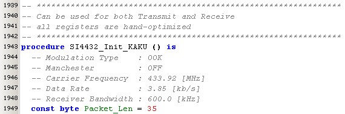</span></p><p class="cs14438CD8"><span class="cs1B16EEB5">&nbsp;</span></p><p class="cs14438CD8"><span class="cs1F22C4AD">And then control your receiver device by sending an On/Off command:</span></p><p class="cs14438CD8"><span class="cs1F22C4AD">&nbsp; &nbsp; &nbsp; &nbsp;&nbsp;</span></p><p class="cs14438CD8"><span>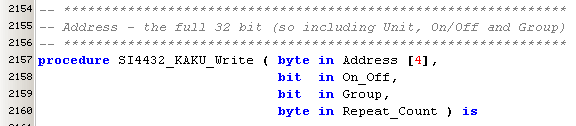</span></p><p class="cs14438CD8"><span class="cs1B16EEB5">&nbsp;</span></p><p class="cs14438CD8"><span class="cs1F22C4AD">There&#39;s also a test routine that sends some test patterns. This procedure is also used by the UHF-Generator in KAKU-mode.</span></p><p class="cs14438CD8"><span class="cs1F22C4AD">&nbsp; &nbsp; &nbsp; &nbsp;&nbsp;</span></p><p class="cs14438CD8"><span>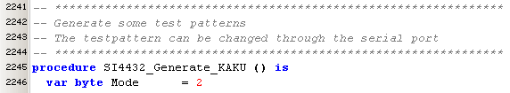</span></p><p class="cs14438CD8"><span class="cs1B16EEB5">&nbsp;</span></p><p class="cs14438CD8"><span class="cs1B16EEB5">&nbsp;</span></p><p class="cs14438CD8"><span class="csA0BF0605">Stream Viewer support</span></p><p class="cs14438CD8"><span class="cs1F22C4AD">The Stream Viewer can receive and decode KAKU-signals, if you still want to know what a KAKU transmitter is sending.</span></p><p class="cs14438CD8"><span class="cs1F22C4AD">The decoding is done in the Stream Viewer (as for the moment I don&#39;t need to decode in a pic).</span></p><p class="cs14438CD8"><span class="cs1F22C4AD">Below is the decoded output shown. Note that the Address (A) contains the full address, i.e. Adress (first 26 bits) and Unit (last 4 bits), bit 27 (Group) and 28 (On/Off) are cleared.</span></p><p class="cs14438CD8"><span>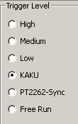</span></p><p class="cs14438CD8"><span class="cs1F22C4AD">&nbsp; &nbsp; &nbsp;</span></p><p class="cs14438CD8"><span>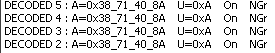</span></p><p class="cs14438CD8"><span class="cs1B16EEB5">&nbsp;</span></p><p class="cs14438CD8"><span class="cs1B16EEB5">&nbsp;</span></p><p class="cs14438CD8"><span class="cs1B16EEB5">&nbsp;</span></p><p class="cs14438CD8"><span class="csA0BF0605">AWST-8802 (double switch)</span></p><p class="cs14438CD8"><span class="cs1F22C4AD">The AWST-8802 is a double switch with a unique code and powered by a CR2032 battery (3V). The battery should last for about two years.</span></p><p class="cs14438CD8"><span class="cs1F22C4AD">The address of the two switches is identical, but the unit number is different: 0x0A and 0x0B.</span></p><p class="cs14438CD8"><span>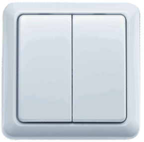</span></p><p class="cs14438CD8"><span class="cs1B16EEB5">&nbsp;</span></p><p class="cs14438CD8"><span>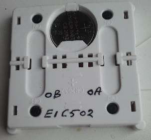</span></p><p class="cs14438CD8"><span class="cs1F22C4AD">&nbsp;&nbsp;</span></p><p class="cs14438CD8"><span class="cs1F22C4AD">There&#39;s no visible marking on the IC.</span></p><p class="cs14438CD8"><span class="cs1F22C4AD">For accurate measurement of the modulation signal you can connect a pic-input-pin (through a 3k .. 10k resistor) to pin-1 of the IC (there is a small testpoint in the neighbourhood) as shown in the picture below.&nbsp;</span></p><p class="cs14438CD8"><span class="cs1F22C4AD">&nbsp;</span></p><p class="cs14438CD8"><span>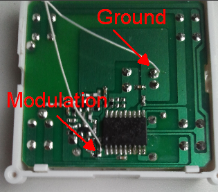</span></p><p class="cs14438CD8"><span class="cs1F22C4AD">&nbsp;&nbsp;</span></p><p class="cs14438CD8"><span>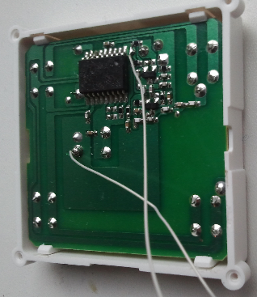</span></p><p class="cs14438CD8"><span class="cs1B16EEB5">&nbsp;</span></p><p class="cs14438CD8"><span class="cs1B16EEB5">&nbsp;</span></p><p class="cs14438CD8"><span class="csA0BF0605">ACM-3500-3 &nbsp;(triple heavy duty receiver)</span></p><p class="cs14438CD8"><span class="cs1F22C4AD">This is a heavy duty receiver with 3 channels. Each channel can learn upto 6 different codes.</span></p><p class="cs14438CD8"><span class="cs1F22C4AD">Each channel contains a large relais, capable of switching 17 A resistive. That makes this swicth ideally suited for switching TL-Lamps and other ECO-devices (with a very bad cosine-phi)</span></p><p class="cs14438CD8"><span>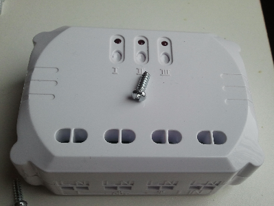</span></p><p class="cs14438CD8"><span class="cs1F22C4AD">&nbsp; &nbsp;&nbsp;</span></p><p class="cs14438CD8"><span>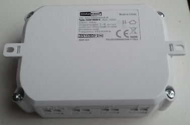</span></p><p class="cs14438CD8"><span class="cs1F22C4AD">&nbsp; &nbsp;</span></p><p class="cs14438CD8"><span>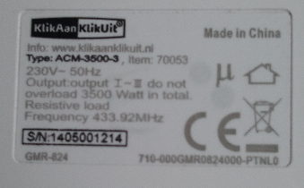</span></p><p class="cs14438CD8"><span class="cs1B16EEB5">&nbsp;</span></p><p class="cs14438CD8"><span class="csC5F71395">Note the weird antenna form (I have 2 of these and both antenna&#39;s have the same shape !!</span></p><p class="cs14438CD8"><span>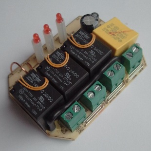</span></p><p class="cs14438CD8"><span class="cs1F22C4AD">&nbsp; &nbsp;</span></p><p class="cs14438CD8"><span>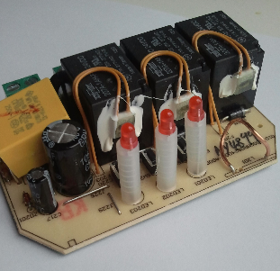</span></p><p class="cs14438CD8"><span class="cs1F22C4AD">&nbsp; &nbsp;</span></p><p class="cs14438CD8"><span>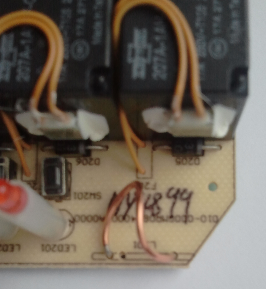</span></p><p class="cs14438CD8"><span class="cs1F22C4AD">&nbsp;</span></p><p class="cs14438CD8"><span class="cs1B16EEB5">&nbsp;</span></p><p class="cs14438CD8"><span class="cs1F22C4AD">The large chip is a MDT10P57A1, a 8-bt microcontroller.</span></p><p class="cs14438CD8"><span class="cs1F22C4AD">The small chip is unknown, I could see &quot;537009&quot;</span></p><p class="cs14438CD8"><span>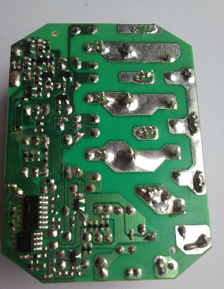</span></p><p class="cs14438CD8"><span class="cs1B16EEB5">&nbsp;</span></p><p class="cs14438CD8"><span class="cs1B16EEB5">&nbsp;</span></p><p class="cs14438CD8"><span class="csA0BF0605">Determine the encoding with Logic Stream Viewer</span></p><p class="cs14438CD8"><span class="cs1F22C4AD">The Logic Stream Viewer is extended with a KAKU ( KlikAanKlikUit, COCO = ClickOnClickOff) triggering. In KAKU trigger mode, the SI4432 receiver is set for optimized for KAKU signals and decoding is done according to the KAKU protocol.</span></p><p class="cs14438CD8"><span class="cs1F22C4AD">&nbsp; &nbsp; &nbsp; &nbsp;&nbsp;</span></p><p class="cs14438CD8"><span>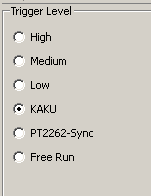</span></p><p class="cs14438CD8"><span class="cs1B16EEB5">&nbsp;</span></p><p class="cs14438CD8"><span class="cs1F22C4AD">Here are the results of my first AWST-8802 (double switch).&nbsp;As you can see in the picture below, detection is not always correctly. But checking enough of the Address and Unit part will garantee a error free detection.</span></p><p class="cs14438CD8"><span>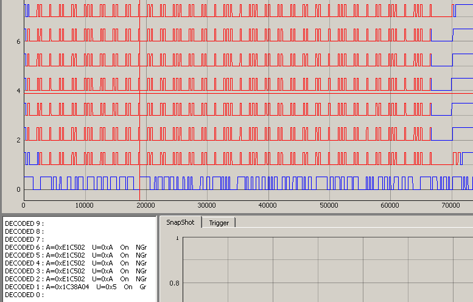</span></p><p class="cs14438CD8"><span class="cs1B16EEB5">&nbsp;</span></p><p class="cs14438CD8"><span class="cs1F22C4AD">Same switch, pressing Off</span></p><p class="cs14438CD8"><span></span></p><p class="cs14438CD8"><span class="cs1B16EEB5">&nbsp;</span></p><p class="cs14438CD8"><span class="cs1F22C4AD">Other switch, pressing On</span></p><p class="cs14438CD8"><span>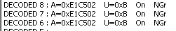</span></p><p class="cs14438CD8"><span class="cs1B16EEB5">&nbsp;</span></p><p class="cs14438CD8"><span class="cs1F22C4AD">Other switch, pressing Off</span></p><p class="cs14438CD8"><span>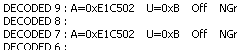</span></p><p class="cs14438CD8"><span class="cs1B16EEB5">&nbsp;</span></p><p class="cs14438CD8"><span class="cs1B16EEB5">&nbsp;</span></p><p class="cs14438CD8"><span class="cs1B16EEB5">&nbsp;</span></p><p class="cs14438CD8"><span class="csA0BF0605">Prijzen in Nederland</span></p><p class="cs14438CD8"><span class="cs1DA2E76"><a class="cs490F1DCA" href="http://www.klikaanklikuit.nl/advies/lampenwijzer/draadloos-schakelen/"><span class="csC6D0E219">http://www.klikaanklikuit.nl/advies/lampenwijzer/draadloos-schakelen/</span></a></span></p><p class="cs14438CD8"><span class="cs1B16EEB5">&nbsp;</span></p><p class="cs14438CD8"><span class="csC5F71395">Schakelaars (onbedraad)</span></p><p class="cs14438CD8"><span class="cs1F22C4AD">AWST-8800 &nbsp;enkel, &nbsp; CR2032, &nbsp;Euro 18.25 &nbsp;(Gamma 16)</span></p><p class="cs14438CD8"><span class="cs1F22C4AD">AWST-8802 &nbsp;dubbel, CR2032, &nbsp;Euro 18.80 &nbsp;(Gamma 16)</span></p><p class="cs14438CD8"><span class="cs1F22C4AD">AMWT-003 &nbsp; dubbel, CR2031, &nbsp;Euro 21.30 &nbsp;(Gamma 22) (ECO 22) &nbsp;inbouw achter een gewone schakelaar, losgekoppeld van de 230V</span></p><p class="cs14438CD8"><span class="csC5F71395">Schakelaars (bedraad)</span></p><p class="cs14438CD8"><span class="cs1F22C4AD">AMWT-230 &nbsp;dubbel, Euro 19.25, (Gamma 19) inbouw achter gewone schakelaar die een lamp MOET bedienen</span></p><p class="cs14438CD8"><span class="cs1B16EEB5">&nbsp;</span></p><p class="cs14438CD8"><span class="csC5F71395">Spaarlamp (ontvanger)</span></p><p class="cs14438CD8"><span class="cs1F22C4AD">AWS-3500 &nbsp; Euro 29.95</span></p><p class="cs14438CD8"><span class="cs1F22C4AD">AFR-060 (lampfitting) &nbsp;Euro 21.85 (max 100 Watt) &nbsp;(Gamma 19) (ECO 17.50)</span></p><p class="cs14438CD8"><span class="cs1F22C4AD">ACM-1000 &nbsp; Euro 18.25 &nbsp;(ECO 14.75)</span></p><p class="cs14438CD8"><span class="cs1F22C4AD">ACM-3500-3, &nbsp;drievoudig, &nbsp;Euro 35.55 &nbsp;(Gamma 30, met 20% korting dus 26) &nbsp;(ECO 30.75)</span></p><p class="cs14438CD8"><span class="cs1F22C4AD">AILS-3500 &nbsp;Euro 25.95 &nbsp;(Gamma 26) &nbsp;(opbouw, met timer uitschakelaar)</span></p><p class="cs14438CD8"><span class="cs1F22C4AD">AWMR-300 &nbsp;Euro 26.95 &nbsp;(bedoeld voor achter schakelaar)</span></p><p class="cs14438CD8"><span class="csC5F71395">TL verlichting (ontvanger)</span></p><p class="cs14438CD8"><span class="cs1F22C4AD">ACM-1000</span></p><p class="cs14438CD8"><span class="cs1F22C4AD">AILS-3500</span></p><p class="cs14438CD8"><span class="cs1B16EEB5">&nbsp;</span></p><p class="cs14438CD8"><span class="csC5F71395">Deurcontact</span></p><p class="cs14438CD8"><span class="cs1F22C4AD">AMST-606 (Euro 15.75)</span></p><p class="cs14438CD8"><span class="cs1B16EEB5">&nbsp;</span></p><p class="cs14438CD8"><span class="cs7CE4C382">The information below should be read from Bottom to Top</span></p><p class="cs14438CD8"><span class="csC5F71395">NOTE: Address decoding in the part below is done on the real address of the first 26 bits (excluding Unit, On/Off and Group)</span></p><p class="cs14438CD8"><span class="cs1B16EEB5">&nbsp;</span></p><p class="cs14438CD8"><span class="csA0BF0605">Optimizing the detector-2 &nbsp;2C/2D/2E</span></p><p class="cs14438CD8"><span class="cs1F22C4AD">For 2C we tried : OOK counter should be around 450, so therefore bit 2:0 = 010</span></p><p class="cs14438CD8"><span class="cs1F22C4AD">0x2C = 02 : bad</span></p><p class="cs14438CD8"><span class="cs1F22C4AD">0x2C = 22 : bad</span></p><p class="cs14438CD8"><span class="cs1F22C4AD">0x2C = 0x12 &nbsp;the best</span></p><p class="cs14438CD8"><span class="cs1F22C4AD">0x2C = 0A : bad</span></p><p class="cs14438CD8"><span class="cs1F22C4AD">0x2C = 0x3A : almost the best</span></p><p class="cs14438CD8"><span class="cs1F22C4AD">So the conclusion is: we need at least bit-4 = 1 peakdetector</span></p><p class="cs14438CD8"><span class="cs1F22C4AD">Next step is to try to distiguish between the needs of ookfrzen and madeten, therefore we tried</span></p><p class="cs14438CD8"><span class="cs1F22C4AD">0x2C = 0x12 &nbsp;peakdeten &nbsp; &nbsp; &nbsp; &nbsp; &nbsp; &nbsp; &nbsp; &nbsp; &nbsp;:</span></p><p class="cs14438CD8"><span class="cs1F22C4AD">0x2C = 0x32 &nbsp;peakdeten + ookfrzen &nbsp;:</span></p><p class="cs14438CD8"><span class="cs1F22C4AD">0x2C = 0x1A &nbsp;peakdeten + madeten &nbsp;:&nbsp;</span></p><p class="cs14438CD8"><span class="cs1F22C4AD">These settings makes not much different, so for teh moment we choose 0x1A</span></p><p class="cs14438CD8"><span class="cs1F22C4AD">it gives a quiet long low after the stop bit and often detects the startbit</span></p><p class="cs14438CD8"><span>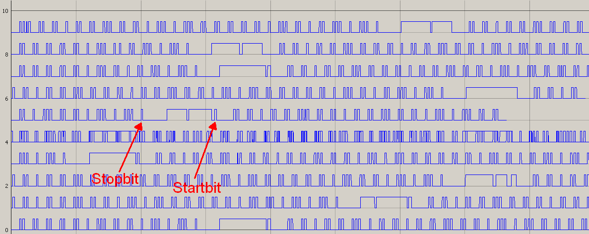</span></p><p class="cs14438CD8"><span class="cs1B16EEB5">&nbsp;</span></p><p class="cs14438CD8"><span class="cs1F22C4AD">0x2E = 0x2B : default = good</span></p><p class="cs14438CD8"><span class="cs1F22C4AD">0x2E = 0x00 : bad</span></p><p class="cs14438CD8"><span class="cs1F22C4AD">0x2E = 0x70 : bad</span></p><p class="cs14438CD8"><span class="cs1F22C4AD">0x2E = 0x0F : best</span></p><p class="cs14438CD8"><span class="cs1F22C4AD">0x2E = 0x7F : slightly worse</span></p><p class="cs14438CD8"><span class="cs1F22C4AD">All of these determine the stopbit and long period behind it very well.</span></p><p class="cs14438CD8"><span class="cs1F22C4AD">0x0F seems to be the best, i.e. attack = 000, decay = 1111</span></p><p class="cs14438CD8"><span class="cs1B16EEB5">&nbsp;</span></p><p class="cs14438CD8"><span class="csA0BF0605">Optimizing the detector</span></p><p class="cs14438CD8"><span class="cs1F22C4AD">The spreadsheet gives for OOK, Rb= 3.85 kHz and BW= 600 kHz, the following values</span></p><p class="cs14438CD8"><span class="cs1F22C4AD">0x2C = 0x29</span></p><p class="cs14438CD8"><span class="cs1F22C4AD">0x2D = 0x44</span></p><p class="cs14438CD8"><span class="cs1F22C4AD">0x2E = 0x2B</span></p><p class="cs14438CD8"><span class="cs1F22C4AD">but the result is much worse then we had before</span></p><p class="cs14438CD8"><span>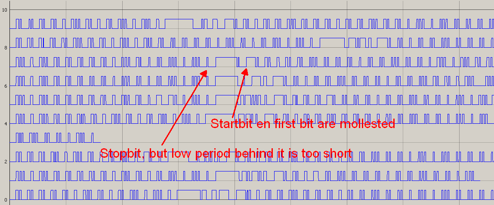</span></p><p class="cs14438CD8"><span class="cs1B16EEB5">&nbsp;</span></p><p class="cs14438CD8"><span class="cs1F22C4AD">So we tried some other settings:</span></p><p class="cs14438CD8"><span class="cs1F22C4AD">0x2C = 0x00 : no result at all</span></p><p class="cs14438CD8"><span class="cs1F22C4AD">0x2C =0 x18 : even worse result</span></p><p class="cs14438CD8"><span class="cs1F22C4AD">0x2C = 0x10, a quiet good result:</span></p><p class="cs14438CD8"><span>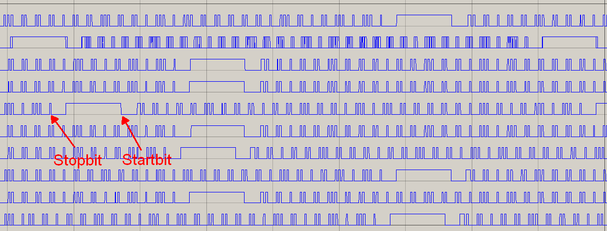</span></p><p class="cs14438CD8"><span class="cs1B16EEB5">&nbsp;</span></p><p class="cs14438CD8"><span class="cs1B16EEB5">&nbsp;</span></p><p class="cs14438CD8"><span class="csA0BF0605">Modifying the UHF generator</span></p><p class="cs14438CD8"><span class="csC5F71395">Startbit</span><span class="cs1F22C4AD">&nbsp;=&nbsp;&nbsp;T,10T = 100_0000_0000, so for the startbit we use&nbsp;</span><span class="csC5F71395">0x04, 0x00</span></p><p class="cs14438CD8"><span class="csC5F71395">1-Bit</span><span class="cs1F22C4AD">&nbsp;=&nbsp;T,5T,T,T, so that&#39;s &nbsp;</span><span class="csC5F71395">0x82</span><span class="cs1F22C4AD">&nbsp;</span></p><p class="cs14438CD8"><span class="csC5F71395">0-Bit</span><span class="cs1F22C4AD">&nbsp;= T,T,T,5T, so that&#39;s&nbsp;</span><span class="csC5F71395">0xA0</span></p><p class="cs14438CD8"><span class="csC5F71395">Stopbit</span><span class="cs1F22C4AD">&nbsp;=&nbsp;</span><span class="csC5F71395">0x80 + some extra delay</span></p><p class="cs14438CD8"><span class="cs1F22C4AD">And the Units value:</span></p><p class="cs14438CD8"><span class="cs1F22C4AD">A = 1010</span></p><p class="cs14438CD8"><span class="cs1F22C4AD">B = 1011</span></p><p class="cs14438CD8"><span class="cs1F22C4AD">Finally the complete (unique) address is &nbsp;00_1110_0001_1100_0101_0000_0010 &nbsp;= 0x0_E1_C5_02</span></p><p class="cs14438CD8"><span class="cs1F22C4AD">var byte KAKU_A1 [] = { 0x88, 0x8E, 0x8E, 0x8E, 0x88, 0x8E, 0x8E }</span></p><p class="cs14438CD8"><span class="cs1F22C4AD">Group = 0, which also seems to be logical</span></p><p class="cs14438CD8"><span class="cs1F22C4AD">KAKU</span></p><p class="cs14438CD8"><span>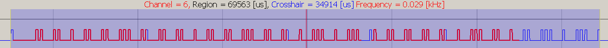</span></p><p class="cs14438CD8"><span class="cs1B16EEB5">&nbsp;</span></p><p class="cs14438CD8"><span class="cs1F22C4AD">UHF-generator, second attempt, that&#39;s good enough !!</span></p><p class="cs14438CD8"><span class="cs1F22C4AD">The mismatch is 0.3% which is quiet acceptable.</span></p><p class="cs14438CD8"><span class="cs1F22C4AD">So we&#39;ve here an extra confirmation that the Baudrate = 3.85 kHz.</span></p><p class="cs14438CD8"><span></span></p><p class="cs14438CD8"><span class="cs1B16EEB5">&nbsp;</span></p><p class="cs14438CD8"><span>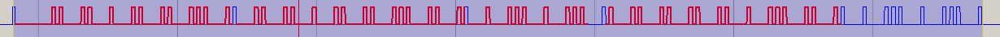</span></p><p class="cs14438CD8"><span class="cs1B16EEB5">&nbsp;</span></p><p class="cs14438CD8"><span class="cs1F22C4AD">UHF-generator, first attempt, we miss a few bytes</span></p><p class="cs14438CD8"><span class="cs1F22C4AD">In this case the On/Off bit is the last bit, but seems to be enough to toggle the real KAKU module</span></p><p class="cs14438CD8"><span></span></p><p class="cs14438CD8"><span class="cs1B16EEB5">&nbsp;</span></p><p class="cs14438CD8"><span>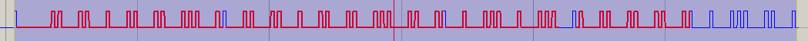</span></p><p class="cs14438CD8"><span class="cs1B16EEB5">&nbsp;</span></p><p class="cs14438CD8"><span class="cs1F22C4AD">The Pause between the signals is 11 ms instead of 10 msec, which is also perfect.</span></p><p class="cs14438CD8"><span class="csA0BF0605">Let&#39;s try RF signal again</span></p><p class="cs14438CD8"><span class="cs1F22C4AD">not good:</span></p><p class="cs14438CD8"><span class="cs1F22C4AD">light green, here should be the startbit with the T,10T</span></p><p class="cs14438CD8"><span class="cs1F22C4AD">dark green, obviously some periods are glued together</span></p><p class="cs14438CD8"><span>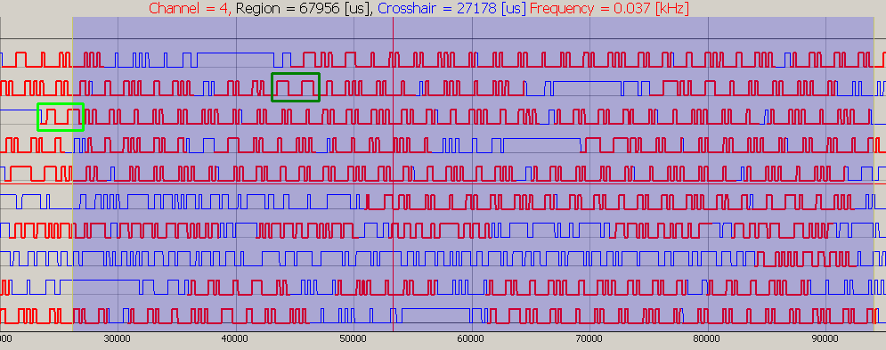</span></p><p class="cs14438CD8"><span class="cs1F22C4AD">some tests with different bandwidths (both RF and Rb) doesn&#39;t give a good result. So we first need a stable signal from a modified UHF-generator.</span></p><p class="cs14438CD8"><span class="csA0BF0605">Signal Coding</span></p><p class="cs14438CD8"><span class="cs1F22C4AD">For determining the exact coding of the signal we connected the modulation signal of a transmitter to pin-B5.</span></p><p class="cs14438CD8"><span class="cs1F22C4AD">Below is a complete sequence</span></p><p class="cs14438CD8"><span></span></p><p class="cs14438CD8"><span class="cs1B16EEB5">&nbsp;</span></p><p class="cs14438CD8"><span class="cs1F22C4AD">According to most of the information on the web, the bottom signal in following region is one final bit&nbsp;</span></p><p class="cs14438CD8"><span class="cs1F22C4AD">&nbsp; &nbsp; &nbsp; &nbsp;&nbsp;</span></p><p class="cs14438CD8"><span>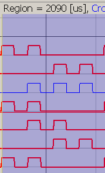</span></p><p class="cs14438CD8"><span class="cs1F22C4AD">&nbsp; &nbsp;2090 / 260 = 8 periods: &nbsp;T,T,T,5T</span></p><p class="cs14438CD8"><span class="cs1B16EEB5">&nbsp;</span></p><p class="cs14438CD8"><span class="cs1F22C4AD">The start bit:</span></p><p class="cs14438CD8"><span class="cs1F22C4AD">&nbsp; &nbsp; &nbsp;&nbsp;</span></p><p class="cs14438CD8"><span>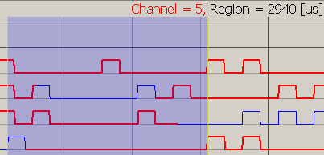</span></p><p class="cs14438CD8"><span class="cs1F22C4AD">&nbsp; 2940 / 262.0 = 11.2 periods: &nbsp;T,10T</span></p><p class="cs14438CD8"><span class="cs1B16EEB5">&nbsp;</span></p><p class="cs14438CD8"><span class="cs1F22C4AD">The stop bit</span></p><p class="cs14438CD8"><span class="cs1F22C4AD">&nbsp; &nbsp;</span></p><p class="cs14438CD8"><span>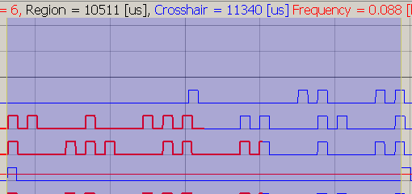</span></p><p class="cs14438CD8"><span class="cs1F22C4AD">&nbsp; 10511 / 262.0 = 40.1 periods: &nbsp;T,39T</span></p><p class="cs14438CD8"><span class="cs1B16EEB5">&nbsp;</span></p><p class="cs14438CD8"><span class="cs1B16EEB5">&nbsp;</span></p><p class="cs14438CD8"><span class="cs1B16EEB5">&nbsp;</span></p><p class="cs14438CD8"><span class="cs1F22C4AD">AWST8802, double On/Off switch</span></p><p class="cs14438CD8"><span class="cs1F22C4AD">A-On, A-Off, B-On, B-Off</span></p><p class="cs14438CD8"><span>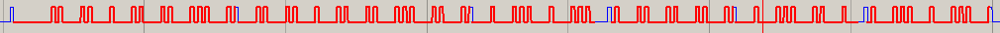</span></p><p class="cs14438CD8"><span class="cs1B16EEB5">&nbsp;</span></p><p class="cs14438CD8"><span>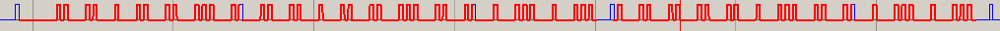</span></p><p class="cs14438CD8"><span class="cs1B16EEB5">&nbsp;</span></p><p class="cs14438CD8"><span>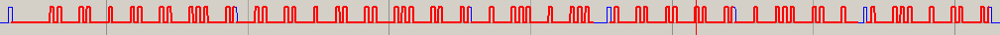</span></p><p class="cs14438CD8"><span class="cs1B16EEB5">&nbsp;</span></p><p class="cs14438CD8"><span>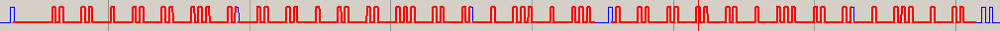</span></p><p class="cs14438CD8"><span class="cs1B16EEB5">&nbsp;</span></p><p class="cs14438CD8"><span class="cs1F22C4AD">Everyone on the web agrees about the content of the message</span></p><p class="cs14438CD8"><span class="cs1F22C4AD">Start Bit</span></p><p class="cs14438CD8"><span class="cs1F22C4AD">Bits 1..26 are assumed to form the (unique) address.</span></p><p class="cs14438CD8"><span class="cs1F22C4AD">Bit 27 = Group (no yet tested)</span></p><p class="cs14438CD8"><span class="cs1F22C4AD">Bit 28 = On/ Off / Dim (Dim is not tested)</span></p><p class="cs14438CD8"><span class="cs1F22C4AD">Bit 29..32 = Unit</span></p><p class="cs14438CD8"><span class="cs1F22C4AD">Stop-Bit</span></p><p class="cs14438CD8"><span class="cs1F22C4AD">Looking at the above signals we see that the first 26 bits are all equal. So the switch information must be in the Unit section, and indeed there&#39;s a difference.</span></p><p class="cs14438CD8"><span class="cs1F22C4AD">But first let&#39;s define the final &quot;0&quot; and &quot;1&quot;. It seems logical to define &quot;On&quot; as &quot;1&quot;.</span></p><p class="cs14438CD8"><span class="cs1F22C4AD">In the A-On signal here&#39;s the switch info</span></p><p class="cs14438CD8"><span>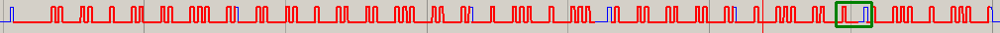</span></p><p class="cs14438CD8"><span class="cs1F22C4AD">So &quot;1&quot; is definied as T,5T,T,T &nbsp; &nbsp;(byte-value = 0x82)</span></p><p class="cs14438CD8"><span class="cs1F22C4AD">and &quot;0&quot; is definied as T,T,T,5T &nbsp; (byte-value = 0xA0)</span></p><p class="cs14438CD8"><span class="cs1F22C4AD">And the Units value:</span></p><p class="cs14438CD8"><span class="cs1F22C4AD">A = 1010</span></p><p class="cs14438CD8"><span class="cs1F22C4AD">B = 1011</span></p><p class="cs14438CD8"><span class="cs1F22C4AD">Finally the complete (unique) address is &nbsp;00_1110_0001_1100_0101_0000_0010 &nbsp;= 0x0_E1_C5_02</span></p><p class="cs14438CD8"><span class="cs1F22C4AD">Group = 0, which also seems to be logical.</span></p><p class="cs14438CD8"><span class="cs1B16EEB5">&nbsp;</span></p><p class="cs14438CD8"><span class="cs1B16EEB5">&nbsp;</span></p><p class="cs14438CD8"><span class="csA0BF0605">Baudrate</span></p><p class="cs14438CD8"><span class="cs1F22C4AD">First the Baudrate was measured with an oscilliscope, directly from the modulation signal from a receiver:</span></p><p class="cs14438CD8"><span class="cs1F22C4AD">&nbsp; &nbsp;&nbsp;</span><span class="csC5F71395">Pulswidth = 260 usec ==&gt; 3.85 kHz</span></p><p class="cs14438CD8"><span class="cs1F22C4AD">As an extra check, the Logic_Stream_Viewer was temporary modified to sample the signal at B5 on which the modulation signal of a transmitter was connected. The bottom signal contains 5 pulswidths, is 1309 usec, yielding:</span></p><p class="cs14438CD8"><span class="cs1F22C4AD">&nbsp; &nbsp;Pulswidth = 262 usec</span></p><p class="cs14438CD8"><span class="cs1F22C4AD">&nbsp; &nbsp; &nbsp; &nbsp; &nbsp;&nbsp;</span></p><p class="cs14438CD8"><span>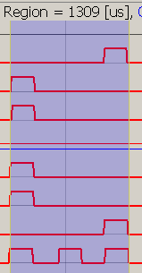</span></p><p class="cs14438CD8"><span class="cs1B16EEB5">&nbsp;</span></p><p class="cs14438CD8"><span class="cs1B16EEB5">&nbsp;</span></p><p class="cs14438CD8"><span class="cs1B16EEB5">&nbsp;</span></p><p class="cs14438CD8"><span class="csA0BF0605">First tests with streamviewer</span></p><p class="cs14438CD8"><span class="cs1F22C4AD">GOA on OOK-2500-600k</span></p><p class="cs14438CD8"><span>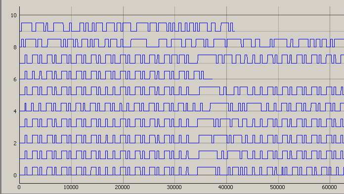</span></p><p class="cs14438CD8"><span class="cs1B16EEB5">&nbsp;</span></p><p class="cs14438CD8"><span class="cs1F22C4AD">GOA on OOK-4100-100k, duidelijk mindere kwaliteit</span></p><p class="cs14438CD8"><span>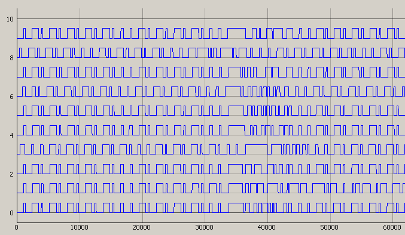</span></p><p class="cs14438CD8"><span class="cs1B16EEB5">&nbsp;</span></p><p class="cs14438CD8"><span class="cs1F22C4AD">GOA on KAKU, rubish</span></p><p class="cs14438CD8"><span>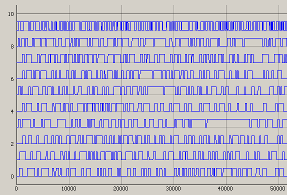</span></p><p class="cs14438CD8"><span class="cs1B16EEB5">&nbsp;</span></p><p class="cs14438CD8"><span class="cs1F22C4AD">KAKU on 4100-100k</span></p><p class="cs14438CD8"><span>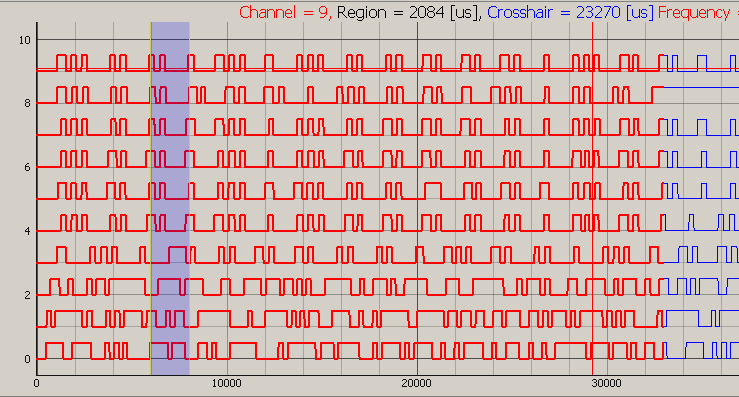</span></p><p class="cs14438CD8"><span class="cs1B16EEB5">&nbsp;</span></p><p class="cs14438CD8"><span class="cs1F22C4AD">KAKU on 4100-600k</span></p><p class="cs14438CD8"><span>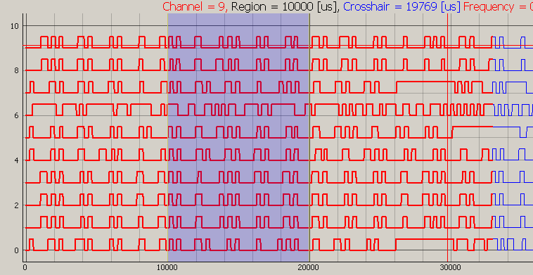</span></p><p class="cs14438CD8"><span class="cs1B16EEB5">&nbsp;</span></p><p class="cs14438CD8"><span class="cs1F22C4AD">KANU on 3600-600k</span></p><p class="cs14438CD8"><span class="cs1F22C4AD">duidelijk te kleine Baudrate, waardoor pulses samengevat</span></p><p class="cs14438CD8"><span>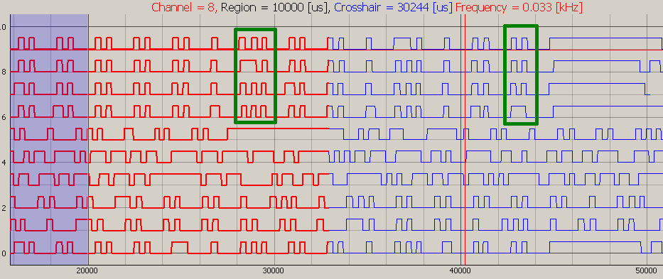</span></p><p class="cs14438CD8"><span class="cs1B16EEB5">&nbsp;</span></p><p class="cs14438CD8"><span>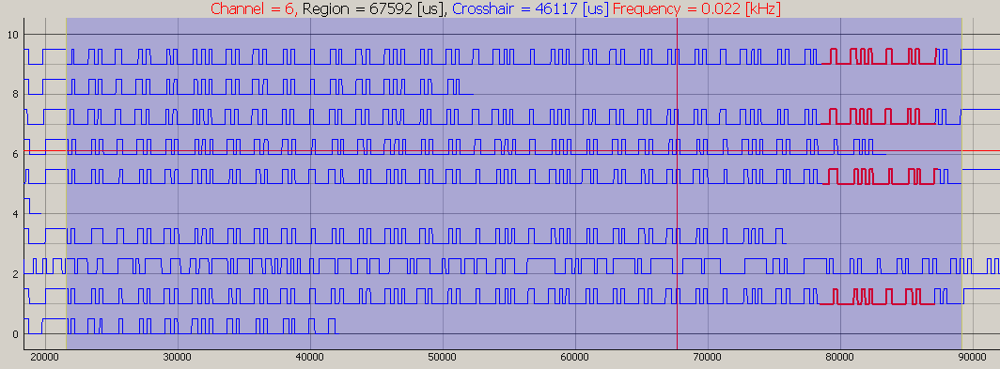</span></p><p class="cs14438CD8"><span class="cs1B16EEB5">&nbsp;</span></p><p class="cs95E872D0"><span class="csCF6BBF71">&nbsp;</span></p><p class="cs95E872D0"><span class="cs7FC7682D">Created with Microsoft Office OneNote 2007<br/>One place for all your notes and information</span></p></body>
</html>
